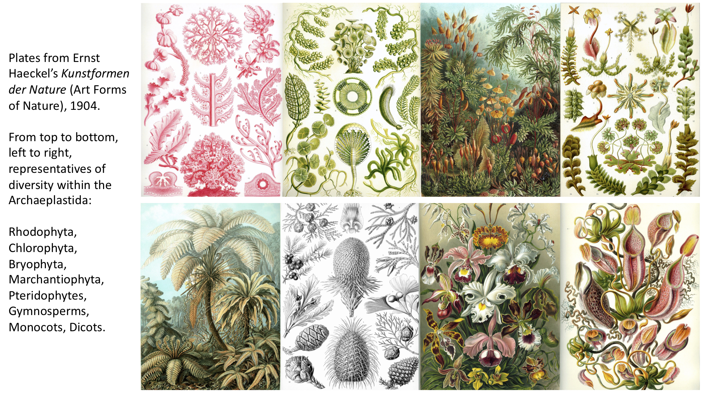
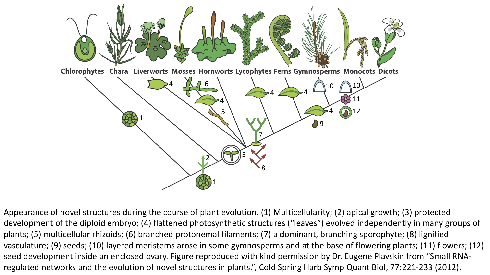

1.6 List of Lists¶
How to create a list of lists¶
Watch this video from 16:25 to 29:41
# To load the video, execute this cell by pressing shift + enter
from IPython.display import YouTubeVideo
from datetime import timedelta
start=int(timedelta(hours=0, minutes=16, seconds=25).total_seconds())
end=int(timedelta(hours=0, minutes=29, seconds=41).total_seconds())
YouTubeVideo("4XIllJVnT4Y",start=start,end=end,width=640,height=360)
The following is a transcript of the video.
💡 Remember: In the previous notebook you modified a list called
angiosperms. Recreate the list again in the cell below to complete this lesson.
# Create the list angiosperms
wine = "Vitis"
tequila = "Agave_tequilana"
beer = "Hordeum_vulgare"
rice = "Oryza"
angiosperms = [wine, tequila, beer, rice]
Let’s talk about plant evolution¶
Plants are essential to human life
Plants feed, clothe, shelter, medicate, and inspire us
Plants regulate global cycles of water and carbon
Plants are diverse, more diverse than just the plants we see on land or those that flower
Plants are hierarchically organized, reflecting evolutionary history
Plants are defined by a single, ancient endosymbiotic event that created choloroplasts
In this lesson we’re going to make a list of lists about plant evolution, so let’s introduce the plant kingdom from a broad perspective. Plants are essential to human life. You have undoubtedly ate a plant today. If you didn’t eat a plant directly you ate an animal and the only reason that animal exists is because somewhere on the food chain a plant was eaten. Plants clothe us, they shelter us, they medicate us, they drug us, they inspire us. Plants also regulate global cycles of water. They are drawing water up through the soil using their roots and then through capillary action and evaporation, something called transpiration at their leaves, they’re constantly pulling up water and releasing it into the air. They’re also assimilating carbon, through carbon dioxide, into sugars, and on longer periods of time they’re taking carbon and storing it in the ground through roots or on geologic scales the plants are dying and storing carbon in the ground that way.
Plants are diverse. They’re even more diverse, as you’ll see in a second, than just the plants we see on the land or even those that flower and they’re hierarchically organized and this reflects their evolutionary history.
And plants are a single group. They are defined by a single, ancient endosymbiotic event that created chloroplasts when a eukaryotic cell engulfed a cyanobacteria.
To give you an idea of what the diversity of true plants look like, remember plants are defined by an ancient event where a eukaryotic cell with a nucleus engulfed a photosynthetic bacterium called a cyanobacteria. Some of the groups of plants that resulted from this, through evolution, were the Rhodophytes, the red algae. Some of the green algae, which mostly live in marine environments, are giant single-celled organisms, including Acetabularia with one single nucleus or Caulerpa with many nuclei in a giant, macroscopic cell. There are Bryophytes, the mosses, the liverworts, which have flattened structures that make beautiful branching patterns, and here are the Pteridophytes, the ferns. This is a panel of gymnosperms and pinecones, and then we have some beautiful flowers, monocots, and these are a specific group of dicots, the Nepenthes. These panels are from Ernst Haeckel’s Art forms of Nature, just to give you an idea of some of the forms of plants that are out there.

All these forms arise through evolution. There’s a naming scheme for plants as you’ll see that’s hierarchical and arises from this tree arrangement of the plants, which results from evolution. The way you should think of evolution is that there are common ancestors, and from these common ancestors that likely don’t exist anymore, but theoretically once did, arose multiple populations. These populations are changing over time.
Here, you can see we have the Chlorophytes and Chara. Most of the green algae are marine, not all, but Chara is a freshwater green algae. Then we go on to land and we get the mosses, we get the liverworts, and the hornworts. The dominant life stage of the Bryophytes is the gametophyte. This is a haploid stage of life, meaning it only has one copy of the genome. We go further and we get to lycophytes and ferns. This is where a dominant sporophyte, which is diploid, arises. You can also see that they evolved flattened photosynthetic structures that look a lot like leaves except that they were independently evolved from leaves, so they’re not technically leaves. This is a lot like a bat wing and a bird wing which are independently evolved structures but appear and serve similar purposes. We go farther and we have the evolution of seeds. The origin of the name gymnosperms is naked seed. These include pines. Eventually we get to the angiosperms, the flowering plants, where the seed becomes enclosed in an ovary and there are flowers.
This figure was made by Dr. Eugene Plavskin and it shows where in plant evolution all these novel features arose and the relationship of these plant groups that we’ll be talking about today.

Creating a list of lists is really easy. Remember you can populate a list with any data type or a mixture of data types in Python. We already saw how to populate a list. You can just create a list and put in a bunch of strings and other lists separated by commas.
For example, we just talked about all the plants, they have a name, the plantae, and then we have all these sub-groups. I didn’t talk about the Glaucophytes. These are only a few species that are aquatic. But we also have the red algae, the Rhodophytes; the green algae, the Chlorophytes; the freshwater green algae, the Charophytes; and we have the mosses, the Bryophytes; the ferns, the Pteridophytes; the pines and other naked seed plants, the gymnosperms; and we have the flowering plants, the angiosperms.
Notice that with the quotation marks these are all strings, but angiosperms is a list. It has four things in it: “Vitis”, “Agave_tequilana”, “Hordeum_vulgare”, “Oryza”.
So, let’s create our list plantae, but it’s a mixture of these strings and this other list.
# Creating a list of lists is easy
# You can populate a list with any data type
# or a mixture of data types in Python!
# That means you can make a list with both
# strings and lists, for example
# As an example, let's make a list called plantae
# of all the different plants we just learned about
plantae = ["glaucophytes", "rhodophytes","chlorophytes","charaophytes",
"bryophytes","pteridophytes","gymnosperms",angiosperms]
Some of the the elements are just strings but angiosperms is a list. If we print out one of the strings, let’s say position index one (which remember is the second list element), we get the Rhodophytes, but in index position 7 (which is the eighth list element) we get back a list: “Vitis”, “Agave_tequilana”, “Hordeum_vulgare”, and “Oryza”, which is the list angiosperms.
# Some of the elements are just strings
# but angiosperms is a list
print(plantae[1])
print(plantae[7])
rhodophytes
['Vitis', 'Agave_tequilana', 'Hordeum_vulgare', 'Oryza']
If you have a list within a list, you can actually access a specific element within the list
of the list. The way you do that is with a double bracket notation. The the first bracket
is going to be the index number of the list. So within plantae we have angiosperms at index position 7. But then the second double bracket is going to be the second element of that list. So we have the angiosperms list and then with index one we’re getting back the second element of the list, which is Agave_tequilana. So even if you have a list within lists, you can use double brackets to use indexing to try to access specific elements.
# You can access an element within a list of a list
# by first indexing the parent list and then
# the index within that list of the element.
# Double brackets are used to do this
# If we want to access "Agave_tequilana" in our plantae list...
plantae[7][1]
'Agave_tequilana'
Like Vitis, which Vitis vinifera is used famously for wine but you can use other Vitis species for other aspects of the wine making process (like rootstocks), many Agave types, other than A. tequilana, are used for other things like fiber or food and maybe we need to not be so specific and change “Agave_tequilana” to “Agave”. You can do this just like we did before but using the double brackets. So we first index out the angiosperms list in the overall list of plantae and then we index “Agave_tequilana”, and we set it equal to “Agave”. Now if we print out plantae you see we no longer have “Agave_tequilana” but only “Agave”. You can reassign elements of the list using indexing just like we did in a simple list.
# Like Vitis, many agave types are used for purposes
# from fiber to food, and maybe we just want to change
# "Agave_tequilana" to "Agave"
# We can use double bracket indexing to reassing
# the list element
plantae[7][1] = "Agave"
print(plantae)
['glaucophytes', 'rhodophytes', 'chlorophytes', 'charaophytes', 'bryophytes', 'pteridophytes', 'gymnosperms', ['Vitis', 'Agave', 'Hordeum_vulgare', 'Oryza']]
Let’s add some more lists by modification. Let’s be more specific. We’ll create a list called gymnosperms. Some gymnosperm types are conifers, cycads, and a really interesting group of plants called Gnetophytes. Some of the bryophytes are called mosses, liverworts, and hornworts. So let’s press shift + enter and create those two new lists.
# Let's add two more lists to our list of plantae
# Let's add some bryophytes and gymnosperms
# First, create two new lists
gymnosperms = ["conifers", "cycads", "gnetophytes"]
bryophytes = ["mosses", "liverworts", "hornworts"]
Then we want to replace what are just strings at the moment with lists. We should see where those strings we want to replace are in the list first. At the moment we have strings called bryophytes and gymnosperms, but they are not lists. We need to replace them with our new lists. So let’s figure out where they are.
They’re in index positions four and six.
# Then, add the lists to the list of lists plantae
# First, where should we insert the lists?
print(plantae)
['glaucophytes', 'rhodophytes', 'chlorophytes', 'charaophytes', 'bryophytes', 'pteridophytes', 'gymnosperms', ['Vitis', 'Agave', 'Hordeum_vulgare', 'Oryza']]
Within the list plantae, in position six we put in the gymnosperm list and within position four we put in the bryophytes list.
Notice that these are not strings. They don’t have quotations and we defined them before as lists already.
So if we print out our new plantae list, what we get now is instead of having bryophytes as a string we have a list and instead of having gymnosperms as a string now we have a list as well.
# Then, insert the lists using indexing!
plantae[6] = gymnosperms
plantae[4] = bryophytes
print(plantae)
['glaucophytes', 'rhodophytes', 'chlorophytes', 'charaophytes', ['mosses', 'liverworts', 'hornworts'], 'pteridophytes', ['conifers', 'cycads', 'gnetophytes'], ['Vitis', 'Agave', 'Hordeum_vulgare', 'Oryza']]
Even though this is a list of lists, it is just a list because a list is just a bunch of data types that we throw together. If we look at the data type of plantae we see that indeed it is a list.
# Even though a list of lists, plantae is still a list
# Let's check with the type() function
type(plantae)
list
What did we learn today?
Python learning objectives
How to create a variable
The variable does not have quotations
A string always has quotations, either ” ” or ‘ ‘
Our first function:
print()Arguments go inside the parentheses
What is indexing?
Indexing takes the form of
[start:end]Indexing always starts at zero
Start is inclusive
The end is not inclusive
Indexing can be used to access specific string characters
How to create lists
Use empty brackets [ ]
Fill with variables or strings
The
type()functions gives back the data type (list, str, int, float)The
len()function gives back the length of a list
How to use indexing to access specific list elements
How to modify lists
List elements can be reassigned using indexing
The
.append()function can be used to add an element to a list
How to create a list of lists
Elements within a list of lists can be indexed using double brackets
Plant learning objectives
Plants are essential to human life
Plants feed, clothe, shelter, medicate, and inspire us
Plants regulate global cycles of water and carbon
Plants are diverse, more diverse than just the plants we see on land or those that flower
Plants are hierarchically organized, reflecting evolutionary history
Species are referred to by a genus and species name
Plants are defined by a single, ancient endosymbiotic event that created choloroplasts
An overview of plant evolution:
Red and green algae (Rhodophyta and Chlorophyta)
Non-vacular plants (Bryophytes: mosses, liverworts, and hornworts)
Vascular seedless plants (Lycophytes, ferns/Pteridophytes, Gymnosperms)
Seed plants (Gymnosperms and Angiosperms)